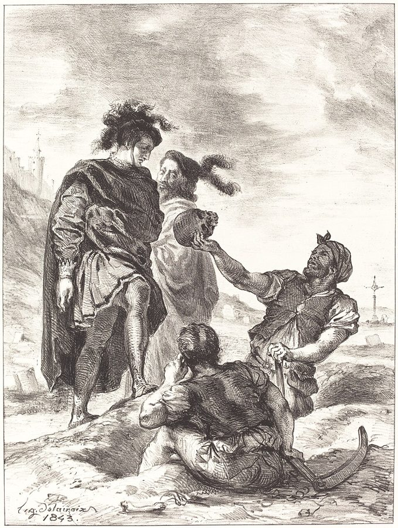
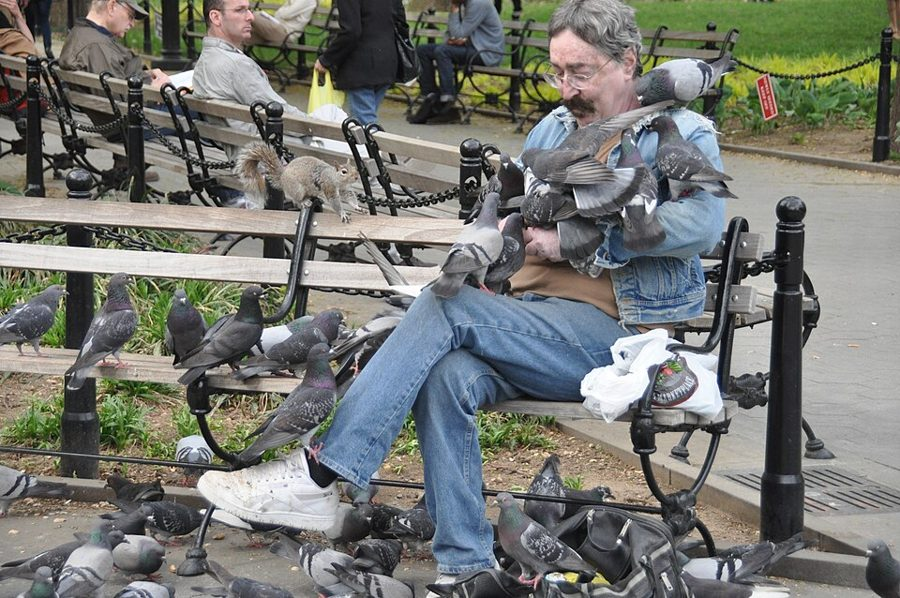
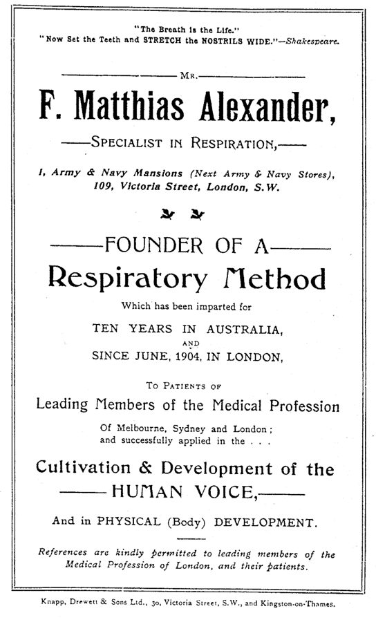

innocent of purpose
… no action, sound, or movement is innocent of purpose …
译本：「不存在无目的的行动、声音或动作」
没有哪个动作、声音是不带用意的
innocent of 是「不沾、不带」，又暗含「无辜」：每个小动作都「有罪」，都在做地位上的手脚。这是上一页「没有中立」在身体上的版本。
这一页只有一节，却是全书最好动手的一节。作者讲他在课上怎么教地位：先不讲道理，让学生改一个小动作，盯住或移开目光、在句首加一声「呃」、说话时头不动，看别人对你的感觉怎么变。接着是人为什么偏爱一头、几个舞台练习、用乱语和四句台词演，最后是一场「拆信」的戏。读的时候抓两件事：地位怎样长在身体的小动作上，以及作者为什么说进门之前只需要知道一件事。

上一页立起了两样工具：地位是做出来的，和跷跷板。这一页转进课堂，讲地位在身体上怎么做：目光、声音、头、手和脚。它是这一篇最长、游戏最多的一节，读者能一个人试的练习大多在这里。下一页接着讲骂人游戏和空间，作者在这一节顺口说的「占更多空间」，到 §6 才展开。
§3 开头作者说，许多心理学家都提到过有些精神分裂症患者看人格外敏锐，他猜是疯狂打开了他们的眼睛。这是 1960 年代流行的浪漫想法，今天的研究整体上看到的是社会认知受损。详见「今天怎么看」。
一个人说话时头动不动、开口前那声「呃」有多长，凭什么能改变别人怎么对待他？
读的时候带着这几个问题。不用先找答案，读完回来对照「检查一下理解」。
这一节像一份教案，顺序大致就是作者上课的顺序。开头先绕到动物身上（三趾鸥、动物园的大猩猩），摆出几项互相矛盾的眼神研究，再给出他自己的看法；然后才进教室，好话坏话、走动对视、「呃」、不动的头，一个接一个，都是先做后讲。中间插进他「此刻」的一个看法：人有偏好的地位；接着是练法的要求和一串学生笔记（可以快读）。后半转向舞台：几场连演的戏、剧团在地狱里的开场、拿斯坦尼斯拉夫斯基作证，再到进错房间和它的加长版、乱语、四句台词、上司的办公室、对长凳和鸽子演。最后一大段是不设防，先低姿态版、后高姿态版，中间突然插进狼和刚果的两个例子，会觉得跳。
作者落在哪：地位是一整套身体信号，目光、一声「呃」、头动不动都会牵动别人，一个小动作还会带出一整套。人各有偏好的一头（他说是此刻的看法），演员两头都要会；上台时知道自己演什么地位就够了；不辩解，可以是很强的防御。
这一页是原书和译本「姿态」一篇的第 3 节。粗体是本站给的节名，下面是译本的节号和小标题、这一节在译本电子书中开头的几个字（搜它就能跳过去），再下面是英文原文的开头。每节标了档：「先读」是这本书最精彩、不读就错过的，「有空」好看但跳过不丢线。读完打个勾。

先把这一页用到、作者默认你懂的几个概念讲一遍。讲的是概念本身，作者拿它推出什么，读原书时自己看。
两个人见面，还没说正事，已经在交换一堆信号：谁先移开目光，说话时头稳不稳，手是不是老往脸上摸，坐着是缩成一团还是往后一靠。心理学管这些叫非语言线索（nonverbal cues），作者把它们当成调高调低地位的把手来教。照作者的说法，开会时一个人发言前「呃——」拖得很长，旁人不太好插嘴；另一个人每句开头都短短地「呃」一下，就容易被打断。
这些信号多半是自动发出的，自己很难察觉，所以作者不先讲，而是让学生故意改一样，看别人的反应。他还说它们是连着的：改了一样，别的会跟着变。下图是本站按这一节提到的信号整理的。
在这一页：§3 前半作者一样一样演示给学生看，后面的舞台练习都拿这些小动作当抓手。
人格心理学里有个老发现：在「支配—顺从」这条线上，人各有习惯的位置，有人一进门就接管局面，有人习惯先退一步，换个场合也大致如此。作者说的是相近的事：人偏爱演高或演低，会设法把自己挪到那个位置上。他多加了一层解释：这个偏好是一种防御。演高等于说「别过来，我会咬人」，演低等于说「别咬我，不值当」。用久了很可能只擅长那一头，被要求演另一头就觉得没了护身的东西。只会演一头的人，作者叫 status specialist，见下一页的专演一头的人，别和上一页能随时换挡的地位专家混了。
他在这句话前加了括号「（此时此刻）」：这是他当时的看法，不是定论。
在这一页：§3 中段作者用它解释学生为什么抗拒陌生的那一头，并据此要演员两头都练。
乱语是即兴课上常用的一种练法：演员说一种当场编出来、谁也听不懂的「语言」，只有声音、节奏和语调，没有词义。它把「说什么」拿掉，只剩「怎么说」和身体。就像隔着玻璃看两个人吵架，或者在国外看一部没有字幕的喜剧：一个词也听不懂，照样知道谁占了上风、谁在服软。
它不是胡说八道。演员要让观众看懂情绪和关系，只是不靠词。下一页讲骂人游戏（§4）时，作者还会让学生用乱语对骂。
在这一页：§3 作者把所有地位练习用乱语重做一遍，要说明观众看的是演出来的高低。
被人指责时，本能是辩解、否认、反问，对方于是加码，越吵越凶。另一种回应是完全不辩：承认，不找理由，也不回击。日常里也见得到：被投诉的店员一句「是我们弄错了，您说得对」，对方的火有时一下子没了着落。
作者管这叫 non-defence，并说它其实是最好的防御之一。它不等于讨好，也不等于认输：他的练习有低姿态版（全盘认错，任凭对方处置），也有高姿态版（平静承认，好像这根本不算事）。两种都不用嘴辩护，只靠样子和声音挡住攻击。
在这一页：§3 最后一大段，作者用一场「拆信」的戏先教低姿态版，再教高姿态版。
作者在课上用过、照着就能玩的；个别几张是本站照书里的段落改的，卡里写明了来历。几个人、怎么玩、看什么写在卡片上；「先猜」那一栏是书里的课堂上发生了什么，先自己猜，或者先玩一次，再点开。全书的游戏卡汇总在游戏汇总。
作者说，原本尴尬的一群人一下子像个「真的」群体了：有人支配，有人顺从。稳稳对视的人说自己觉得有力量，看上去也是；移开又瞟回的人觉得自己弱，看上去也弱。学生喜欢这个练习，又被感觉之强烈弄糊涂了。有个学生在笔记里写，移开再瞟回时，觉得人人都想把自己踩在脚下。
作者说，短「呃」放句首，学生说他显得无助、软弱，却说不出他做了什么不同；挪到句中，他显得强了一点；拉长放回句首，他显得更重要、更自信。还有不少人发不出短「呃」，会变成「嗯」或拖长。作者的解释：短「呃」是请人打断你，长「呃」是在说「我还没想好，但别打断我」。
译本：「固定头部的把戏」
作者在课上突然变得很有权威，学生猜是对视、是坐直了，他一样样停掉，效果还在，秘密是说话时头不动。他说一稳住头，他会自动做出别的高姿态的事：句子说完整、目光停得住、动作更顺、占的「空间」更多。要权威的角色得学这一招，军官受训时也学着不动头下命令。
译本：「进错了房间」
作者说，学生常低着头、甚至倒着走进来，好像故意不让自己看见这是错的房间；走两步，「看见」观众，再很假地退出去。他提醒大家：我们都走错过门，也知道该怎么做，人进入新地方总会先扫一眼。练习一「真」起来，学生就明白里面有一次地位的变化：为一种场合准备的地位，碰上意外不得不改。
这个练习有个加长版：迟到的老师冲进门训话，戴上眼镜才发现面前是校董，赔着不是往外退，门又卡住。作者说它很快就能把人弄得崩溃，他从不强迫谁玩，并要全班明白可以失态，谁也不许因此说他爱出风头或胆小。这一版要有老师带，别自己往深里演。
作者说，第一遍 B 多半会推搡 A，他得叫停。第二遍 A 一认，B 就卡住，可能往后退，甚至退到墙边靠着；A 一抬高自己，B 就逼上来。作者见过演低的学生演完乐得满地打滚。高姿态版起初几乎没人演得下来，作者的办法是让局面偏向 A：A 是主人，拆的是来求娶他女儿的客人的信。
作者说普通演法容易推搡起来，他会及时叫停，免得有人受伤。和朋友试，先说好只动嘴不动手。
按在书里出现的顺序排，标题前是节号。只讲到读懂这一页需要的程度。
三趾鸥是一种在海边悬崖上成群筑巢的小型海鸥。作者说，自从有人送了他一本讲三趾鸥群里谁支配谁的书，他就知道这回事，却没有马上想到拿来训练演员。群居动物先较量，排出高低以后就很少再打，除非有谁想改变次序，这就是啄序。他举的例子从人、鸡一直到潮虫（woodlice）。他接着说，正常人被训练得看不见每个动作都有目的，再扯到精神分裂症患者，这一点留到「今天怎么看」。
作者引了心理学家 Kenneth Strongman 1970 年发表的一段话：他们起初依据 Argyle 和 Dean 的说法，认为先移开目光的一方是顺从的；可是埃克塞特大学的研究生 Poppleton 拿人格问卷对照，发现正好相反，先移开目光的人支配性更强。作者再拿斯坦福大学的一项实验对比：被人盯着看的司机，绿灯亮后开走得明显更快。Michael Argyle（1925–2002）是牛津的社会心理学家，研究非语言交流的先驱之一；路口那项实验多半是 Phoebe Ellsworth 等人 1970 年代初在斯坦福做的一组现场实验。作者的结论是：分歧本身说明地位往来很难看清。

作者提他只有一句：这类体态专家把高地位的姿势当成「正确」的来教。前一句作者刚说过，好像人本来的状态是高的，只是为了避免冲突才把自己调低，这一句算是旁证。
这一节的作者注很好玩：慢动作让人显得地位高，所以电视里有超人速度的英雄，奔跑时反而用慢镜头拍。按道理该快放，可快放就会像 Keystone Cops 或「仿生鸡」（bionic chicken）一样抽搐乱跑。Keystone Cops 是 1910 年代美国默片里一群手忙脚乱的滑稽警察。注里没点剧名，本站猜说的是 1970 年代的美剧《无敌金刚》（The Six Million Dollar Man）：主角装了仿生的腿，飞奔的镜头都是慢动作；「仿生鸡」像是作者顺手拿它开的玩笑。这条注挂在「动作顺滑是高姿态」那一句后面。
Theatre Machine（译本：「戏剧机器」）是作者 1960 年代后期带出来的即兴剧团，演员来自皇家宫廷剧院的工作室，有讣告称它是英国第一个纯即兴的剧团，在欧洲各地巡演。作者说，要是没有地位练习，他们不事先排好场景，就不可能巡演成功。书里那个地狱开场就是例子：对方一开口，你得一瞬间明白这是地狱、他是魔鬼、你已经死了，来不及「想」，只能靠地位接话。
《创造角色》（Creating a Role）是斯坦尼斯拉夫斯基讲表演的书（他的简介见上一页），书里由导演 Tortsov 带着叙述者「我」排戏；赫列斯达可夫是果戈理《钦差大臣》的主角。「规定情境」（given circumstances）是他体系里的说法：剧本和导演给定的时间、地点、人物处境。美国的「方法派」（Method acting，Lee Strasberg 等人发展）很看重演员先吃透这些。作者批评的是一些方法派演员以为不知道全部情境就没法即兴；他引了书里 Tortsov 反问学生会不会走进客栈房间的那一段，说斯坦尼本人「几乎肯定」会同意他。
RADA（Royal Academy of Dramatic Art，皇家戏剧艺术学院）在伦敦，1904 年创办，是英国最老牌的戏剧学校之一。作者说，那出「老师撞见校董」的小戏，是有人问他能不能让 RADA 的学生有更强烈的情绪体验时发明的。他说一位斯堪的纳维亚演员似乎一向被自我意识捆住，演了这出戏突然开了窍；作者用禅宗的词 satori（悟）来形容那一刻。
作者用两个例子说明不设防在台下也有：打输的狼把脖子和肚皮露给对手，对手想咬却咬不下去；几个刚果士兵从吉普车里拖出两个白人记者，打死一个，正要打死另一个时，他哭了出来，士兵们笑着把他踢回车里放走了。两件事作者都没给出处和时间。他的解读是，看白人哭比开枪更让那些士兵满足。这是一则带着那个年代殖民和种族紧张的轶事，本站照书转述，不当证据。狼的画面在当时的通俗动物行为学里常见；今天对野外狼群的研究发现，狼群多半是一对父母带着子女，「头狼」之争是圈养狼身上看到的。
读译本时值得翻一下原文的地方：双关、行话、口语，和译本传不出的语气。灰色斜体是原文里的一小段，在英文电子书里搜它就能找到；方框里是译本这一句的译法。译错的放在下一节「译本勘误」。
对着译本读这一节时，下面这些地方会把人读歪。方框里是译本的原句，在译本电子书里搜它就能找到；灰色斜体是英文原文那一处。只收意思错了、反了、漏了的，措辞上的出入不收。全书的勘误汇总在译本勘误。
… normal people are inhibited from seeing …
译本：「这是因为很多人不知道，不存在无目的的行动」
原文说正常人被抑制着、不让自己看见每个动作都有目的，所以他读了三趾鸥的书也没想到用。这和上一页「平时被禁止看见地位往来」是一个意思，也接着下一句：精神病人没有这层抑制。
… dangers of looking at gorillas through binoculars …
译本：「因此人们用双筒望远镜观察大猩猩以避免危险」
原文：盯视常被当成挑衅，所以用望远镜看大猩猩有危险，在它眼里你正死盯着它。译本说成用望远镜是为了避险，意思正好反了，「盯视等于挑衅」的例子也就没了。
… My belief (at this moment) is that …
译本：「我相信每个人都有自己喜欢的姿态」
原文这句里有个括号「（此时此刻）」：作者特意说明，人有偏好的地位只是他写书时的看法。译本没有这个限定，读来像定论。
… while his partner moves jerkily …
译本：「而他的搭档则会快速地移动」
jerkily 是动作一顿一顿、不连贯，和前面的「非常平稳」相对。作者注里讲的是慢动作显得地位高；这里对比的是顺滑和不连贯，不是慢和快，照译本去练会练偏。
… one sits back and spreads himself …
译本：「有的人则会把脚部朝外摆放」
原文是坐着往后一靠、四肢摊开，多占地方，和「脚尖内扣」的缩着相对。译本只说脚朝外，丢了「占空间」这层，而下一段作者正讲高姿态会占更多空间。
… with my teeth covering my bottom lip …
译本：「我会抿嘴笑」
原文是笑的时候上牙盖住下嘴唇，有点局促的那种笑，后面「进错房间」一段作者也让演低的学生只露上排牙。「抿嘴笑」是闭着嘴笑，照着做不出作者说的样子。
… the problem of succeeding in the eyes …
译本：「它们与演员是否成功这个问题息息相关」
原文：学生以前即兴时当然也在演地位，但演的是自己的地位，心思在怎样在观众眼里演成功，而不是角色的地位。译本前一句又多出「固定姿态」，整段读不出这个对比。
… people I thought I knew very well …
译本：「对有些人，我很清楚我不敢跟他们尝试」
原文：有些我自以为很熟的人，我不敢跟他们玩；倒是新交的朋友很容易玩。妙处在这个反差。译本把「自以为很熟」变成「我很清楚」，下一句的对照就没了。
… almost talking down to them …
译本：「我内心的态度也在跟他们交流」
talk down to 是用居高临下的口气对人说话。这位学生的「顿悟」是：他和人说话时，心里几乎总在俯视对方。译本把要紧的发现译没了。
… the actual status he’s playing may be …
译本：「即使他所扮演的角色对他来说可能很陌生」
原文：即使他此刻演的地位对他很陌生，也觉得一切容易。这正接着前面「人有偏好的地位」：练成了自动，平时不习惯的那一头也演得像生活一样。
… impotence, and of the hostility of objects …
译本：「阳痿之感和对障碍物的敌意」
impotence 在这里是无能为力；the hostility of objects 是物件对你怀着敌意，像那扇卡住的门存心跟你过不去，小时候常有这种感觉。译本「对障碍物的敌意」方向反了。
… crumbling wrecks in a very short time …
译本：「然后让他们重归生活和自然的表演」
原文只说这个练习能在很短时间内把人弄得崩溃。后半句是译本加的，读来像作者保证练完就能恢复，冲淡了他「可怕的是没有底线」和「我不逼任何人玩」的警告。
… considered exhibitionistic or cissy …
译本：「他们也不会因为踊跃或胆小而受到惩罚」
原文：要让全班明白，人可以情绪失控，谁也不许因此被看成爱出风头或「娘娘腔」（cissy 是当年的蔑称）。前半的 get upset 也不只是「不高兴」。
… an enormous resistance to work against …
译本：「会给上司带来巨大的阻力」
原文：史密斯演高时，「您不再考虑一下吗」这句求情的话给他（演员）出了个大难题，要顶着它演。阻力是给史密斯的。
… may play low status to a subject …
译本：「国王对某一对象的姿态可能很低」
subject 在这里是臣民：国王可以对一个臣民演低，但不会对自己的宫殿演低。译成「某一对象」，人和物的对比就没了。
… do it with anything in the environment …
译本：「他可以在环境中做任何事情」
原文：他不需要另一个演员来演地位戏，环境里的任何东西都能拿来演。这是鸽子那段的落点，译本说成「做任何事情」。
… only the way they look and sound …
译本：「我让学生们只用看和声音来避开攻击」
the way they look 是自己看上去的样子（神态、姿势），不是「看」这个动作。不设防就是不用话辩护，只靠样子和声音挡住攻击。
… If he starts to shake A …
译本：「如果他开始训A」
shake 是抓住对方摇晃，动手了。作者说那时 A 要哭着不停点头说「你说得对」。前面他还说过普通演法会推搡起来、得叫停，这里也是身体上的冲突。
In order to enter a room all you need to know is what status you are playing.— §3。本站译：要走进一个房间，你只需要知道自己在演什么地位。
这是全节口气最硬的一句，是冲着那些「不知道全部规定情境就不能动」的演员说的。关键词是 all：别的都不必先知道。作者紧接着还加了码：懂得这一点的演员，完全不要规定情境也能在观众面前即兴；然后才搬出斯坦尼斯拉夫斯基，说连他也「几乎肯定」会同意。「几乎」管的是斯坦尼会不会同意，不是这句话本身。译本：「你所需要知道的就是你现在的姿态」，读到这里别把「姿态」想成身体的样子，它就是地位。
I call it ‘non-defence’, but really it’s one of the best of all defences.— §3。本站译：我管它叫「不设防」，可它其实是最好的防御之一。
一句俏皮的悖论：名字叫不防，其实最会防。注意 one of the best，是「最好的之一」，不是唯一的好办法。读完拆信那场戏再回来看，它说的是「不用嘴防」，不是什么都不做。
读完这一节再看。下面是作者在这一节里的主张，由本站按主张重新组织，不按原书的顺序；每条后面是节号，拿不准就回书里那一节再读一遍。
作者说他先让学生做练习（对旁人说句好话再说句坏话、对视、「呃」、头不动），再讨论，甚至再提这个词，好减少学生对地位练习的抵触。学生常常惊讶于感觉之强，却说不清哪里变了，也常发现自己弄出了相反的效果。
§3他说头不动、脚尖内扣这些只是让学生体验的花招，可一用上，别的高或低的表现会自动跟来：句子完整、目光停住、动作更顺、占更多空间，或者「呃」、气喘和局促的笑。他承认这看似没道理，但就是这样。至于眼神，他引的研究互相矛盾，他的看法是：地位不靠盯，靠对盯的反应。
§3他说这是他此刻的看法：人偏爱演高或演低，拿它当防御，久了很可能只擅长一头。所以他让学生演四种场景（都低、都高、一高一低、中途反转），要求只比对方高或低一点，反转要平滑到每隔五秒拍张照都能排出顺序；想演高却没演成，同样好看。
§3他说地位一旦像在生活里那样自动了，不做准备也能即兴复杂的场景，演员觉得一切都容易。进一个房间只需要知道自己演什么地位，他认为斯坦尼斯拉夫斯基几乎肯定会同意。乱语、四句台词、对家具和鸽子演都在说明：说什么不如演出来的地位要紧，对物件也能演地位。
§3被质问时只靠样子和声音，不作口头辩护。低姿态版全盘承认，对方越来越难发作，他一抬高自己，对方就逼上来。高姿态版难得多，学生的手脚会偷偷想逃，他的办法是先把局面设计得对承认的人有利。他拿狼和一则刚果的事说明台下也有这种机制。
§3合起来：作者把上一页的看人方法变成了一门能练的手艺：地位长在目光、声音和头手脚上，可以一样一样拆开练；练到自动，演员就能空着手上台。
这本书 1979 年出版。下面挑出这一页里能被后来的研究检验的说法，分「书里 / 当时 / 今天」三栏，并给一个结论。结论判的是标题里「书里的说法：」后面那一句。全书的这一节汇总在今天怎么看。
读完作者的主张，再看它站不站得住。每一块摆出三样：主流怎么看，作者怎么看，本站的评论。最后一句是本站对这一页的总体判断。
主流看法：要分开三件事。别人会不会从你的姿势、声音、目光判断你的地位：大量研究支持会。你自己摆个姿势，会不会觉得更有力量、连激素都变：2010 年的「权力姿势」研究说会；2015 年一项 200 人的重复实验只重现了「自己觉得更有力」，激素和冒险行为都没重现，原研究的第一作者 Carney 2016 年公开说她不再相信这个效应；2022 年一项元分析认为，姿势对自我感觉有小的影响，对生理指标没有可靠影响。
作者的看法：一个小动作会连带出一整套高或低的表现，脚的位置能影响句子和目光；他的证据是课堂演示和学生笔记。§3
本站的评论：作者讲的主要是第一件事和「连带」：给演员一个具体的把手，整套行为就跟着来，这在表演课上很好用，读者也能对着镜子验证。但学生笔记是一屋子愿意配合的人在一位有魅力的老师面前写的，「我觉得自己变强了」很容易被期待带出来。别把它读成「两分钟姿势改变人生」；能带走的是：别人确实在读你的头、手和那声「呃」。
主流看法：人格心理学把「支配—顺从」当作人际风格的一条主轴（Timothy Leary 1957 年的人际环形模型，后来 Wiggins 等人发展），一个人在这条轴上的位置相当稳定，和外向性里的「果断」也有关。把这种偏好说成「防御」，更接近精神分析的讲法，直接证据不多。
作者的看法：他说「此时此刻」他相信人各有偏好的地位，演高演低都是自保，用久了很可能只擅长一头，被要求演另一头会觉得没了防备。§3
本站的评论：「偏好」这一半和今天的人格研究对得上；「防御」这一半是个好用的比喻，它说明了为什么让一个习惯演低的人演高会那么难受，这对教戏、对理解自己都有启发。作者自己加了「此时此刻」，本站也建议这样读：一个工作假设，不是诊断。更值得带走的是他的处方：两头都练，偏好就不再是笼子。
主流看法：冲突研究大体支持「承认」的力量：1989 年 Ohbuchi 等人在《人格与社会心理学杂志》发表的实验发现，受害一方收到道歉以后，对冒犯者的评价更正面，攻击性更低。不过道歉的效果取决于对方信不信你的诚意。
作者的看法：不作口头辩护、只靠样子和声音挡住攻击，是最好的防御之一；A 越接受 B 的支配，B 越被推开。他拿狼和刚果士兵作证。§3
本站的评论：作为舞台练习它好极了：把「防御」从嘴上拿走，逼演员只靠地位挡住对方；台下的读者也能看懂为什么争辩常常火上浇油。但作者的两个例子要小心读：狼的画面来自当时的通俗动物行为学，刚果那位记者哭出来或许救了命，可没人能据此推荐示弱。练习里是兄弟拆信，赌注很小，这正是它管用的条件；在真有危险的关系里，一味认错不是办法。
本站的总体看法：这一页最值得带走的是一套能对着镜子验证的小把手：目光停不停得住、那声「呃」有多长、说话时头稳不稳，它们确实是别人读你的线索，作者讲得又早又具体。打折扣的有三处：学生笔记当不了证据，「偏好是防御」只是他当时的假设，开头那句精神病人看得更透已经站不住。
先在心里答，再点开。答错的那题，回书里把对应那一节再读一遍。
为了把学生对地位练习的抵触降到最低。先在身上体验到那种感觉，再听解释，就不容易一上来就排斥。
他认为移开目光可以是高地位，只要不马上又瞟回去；不理人地位就升，忍不住回看就降。地位由对盯视的反应决定，戴墨镜别人就看不见你眼里的退让。
他会说完整的句子、目光停得住、动作更顺滑、占更多「空间」，都是高地位的表现。反过来脚尖内扣，就容易每句前加个犹豫的「呃」、局促地笑、说话有点气喘。
A 慢悠悠地走来，像根本没迟到；B 盯着他、加重语气说「你好」；A 移开视线、叹口气问等很久了吗，好像 B 在找茬；B 盯着他说「很久」，或者转身就走，等 A 跟上来。
不然看起来就像是他自己的办公室。反过来，上司即使对史密斯演低，对房间也得演高，否则像个闯进来的人。
A 一直接受 B 的支配，B 找不到可以较劲的东西，越攻越像被风吹开，只能硬逼自己发火。A 一旦出错、抬高了自己，B 就会逼上来。
学生嘴上装高，身体却偷偷露出低姿态的动作：一只胳膊爬上椅背像想逃或想抓住什么，一只脚打拍子像要走。他把局面设计得对 A 有利：在 A 家里，B 是来求娶 A 女儿的客人。
用一句话说这一页：
想一想：你说话时，句首常有那声「呃」吗？开会发言、和家人争执时，你的头是稳的还是在晃？下次被人指责，如果你一句也不辩解，会发生什么？
读过又忘了，从这里想起来。挑的是这一页最值得记住的故事、游戏和说法，不按原书顺序；每条后面是节号，想细看就回书里那一节。全书各页的这一节都收在全书回顾。
一句话：地位长在身体上：目光、一声「呃」、头稳不稳；作者教人先做后想，知道自己演什么地位，就能空着手上台。
作者在课上突然有了权威，学生猜是对视、是坐直，他一样样停掉，效果还在。秘密是说话时头不动：演哈姆雷特得学，演掘墓人可以摇头晃脑。
§3句首短「呃」显得软弱，像请人打断；挪到句中强一点；拉长放回句首，就成了「我还没想好，但别打断我」。
§3「火湖还是粪河？」来不及想，只要知道自己演什么地位：演高就冷冷地选粪河，嫌地狱不过如此；演低就满眼惊恐地请对方替自己挑。
§3演员在长凳上喂想象的鸽子，喂得很假。作者说「对鸽子演低」，表演马上可信了，后来一只鸽子还拉在他胳膊上。地位对物件也能演。
§3拆信那场戏，A 一律认错，B 越攻越像顶着风。演低的学生演完满地打滚，演 B 的说他当时心想：准是妈妈教他这么干的。
§3